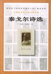

泰戈尔诗选

9
★★★★★
豆瓣评分 · 68,400 人评价
诺贝尔文学奖得主泰戈尔的传世抒情诗选，汇聚冰心与郑振铎两位文学大师的名译，将东方哲思、童真母爱与浩瀚神恩融于清澈如水的短诗。
总体观点
《泰戈尔诗选》精选了亚洲首位诺贝尔文学奖得主罗宾德拉纳特·泰戈尔一生最具代表性的四部抒情诗集——《吉檀迦利》《新月集》《飞鸟集》与《园丁集》。该版本采用中国现代文学巨匠冰心与郑振铎在二十世纪初翻译的经典译本，不仅忠实传达了梵印文学静穆庄严的泛神论韵味，更以极其优美凝练的现代汉语白话诗风，成为滋养一代代中国读者的心灵绿洲。
泰戈尔的诗歌超越了狭隘的民族与时代界限。他在大自然的微风、落叶、晨露与星辰中感悟无限神明与宇宙大爱，在孩童天真的咿呀学语与母亲温柔的怀抱中打捞生命最初的圣洁。其诗篇既有如晨钟暮鼓般清澈通透的人生箴言，又有直击灵魂深处的悲悯与宁静，具有不可磨灭的灵性抚慰力量。
核心观点
-
1. 在万物微尘中照见无限大爱的泛神论诗学
神圣并非高悬在虚无飘渺的庙堂之上，而是隐身于尘土、耕作的农人、落下的花瓣与清晨的第一缕微风之中。
《吉檀迦利》名句：‘神不在孤立的冷殿里，他在锄着泥土的农人那里，在烈日和暴雨中，他的衣服沾满尘垢。’ -
2. 童真是连接凡俗世界与神圣乐土的唯一桥梁
成人被名利算计所蒙蔽，唯有未经世俗污染的孩童以纯洁无邪的心智，保有与宇宙造物直接对话的神性直觉。
《新月集》中孩童向母亲发问‘妈妈，天上的云彩是从哪里来的’，天真烂漫的想象将日常琐事化为黄金般的诗意王国。 -
3. 飞鸟集式的格言微雕：于刹那瞬息中捕获永恒
以两三行看似信手拈来的简短素描，凝结深刻的人性洞察与宇宙规律，达到‘一粒沙中见世界’的禅意巅峰。
名句：‘生如夏花之绚烂，死如秋叶之静美’、‘使生如夏花之绚烂，死如秋叶之静美’，道尽生死转换的从容与浩然气象。 -
4. 克制的世俗爱恋：园丁集里深沉而含蓄的情愫
真正的深情不是占有与狂热的宣泄，而是在默默守望与精神共鸣中，将爱意升华成照亮彼此生命的无私甘泉。
《园丁集》中青年诗人自比为采花园丁，在清晨静候恋人推开百叶窗的一瞬，将满心爱意写成清风拂过面颊的微颤。 -
5. 死亡作为重返宇宙怀抱的终极安歇与加冕
死亡并非黑暗绝望的虚无终局，而是漂泊游子卸下一身尘劳重返母亲怀抱的静谧黄昏，是生命的圆满加冕礼。
诗人写道：‘在死亡敲门的那一刻，我将为他奉上我整座生命的满溢酒杯，微笑着与他携手踏入寂静的永恒。’
全书结构
-
第一辑 《吉檀迦利》：献给造物主的灵性颂歌
泰戈尔荣获诺贝尔文学奖的核心组诗，以虔诚的心灵向至高生命真理献上灵魂的赞美诗。
第1首‘你已经使我无穷无尽，这样的使我欢喜。这脆薄的生灵之盂，你一次一次地盛满鲜新的生命’，奠定神圣基调。 -
第二辑 《新月集》：纯真孩童与无私母爱的天堂
冰心译笔下的儿童诗圣经，以母亲与孩子的亲昵对答描绘人类情感最纯粹无瑕的原点。
《金色花》中孩子幻想变成一朵金色花长在树上，当母亲沐浴后走过树下，孩子悄悄把芬芳洒在母亲读书的纸页上。 -
第三辑 《飞鸟集》：微风与落叶中的自然哲思
郑振铎翻译的三百余首哲理短诗，如同一颗颗清晨荷叶上的晶莹露珠，闪耀着智慧微光。
‘鸟儿愿为一朵云，云儿愿为一只鸟’，以极简对仗揭示现代人相互羡慕他人生活、丧失自足本心的荒诞盲目。 -
第四辑 《园丁集》：青春爱恋的甜蜜、渴望与幽怨
展现青年时代诗人对人间情爱的热烈拥抱与痛苦求索，将世俗爱恋与灵性追求无缝交融。
诗人在黄昏的小径上等待心上人的身影，马蹄声由远及近又渐渐消失在树林深处，怅然若失中流淌出纯美的旋律。 -
第五辑 《流萤集》：黑夜微光里的永恒顿悟
泰戈尔晚年短诗精粹，文字愈发洗练苍凉，在暮年风霜中重申对人类前途的坚定信念与深情祝福。
‘萤火虫虽小，但在黑暗中它向黑夜宣告了星辰的存在’，鼓励在绝望时代中的每一位渺小个体守卫良知的星火。